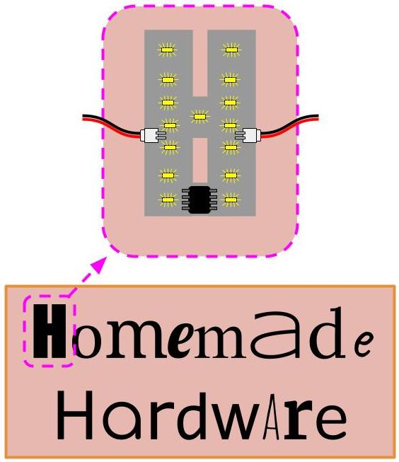

For our first assignment, we will be working within some constraints. Making your first DIY circuit board involves learning quite a few new concepts and techniques, so we will be working within some design limitations to help you focus on what's important.
What is a marquee sign? These are signs that are filled with lights, where each letter is formed by a series of individual bulbs or LEDs.
We will be creating a group project, each of you making a PCB in the shape of a letter. Together, all your letters will spell a phrase. Your PCBs will have LEDs on them and a capacitive sensor, so that they can light-up and be interactive.
To make a letter PCB, you will need a few important things on it:
In my PCB above, I am using a quarter for my capacitive sensor. You can pick and conductive thing (metal, conductive thread, etc), and attach it to your PCB. Please do not pick a sensor that is larger than your PCB!!!
Once our PCBs are ready, we will assemble them together to spell out our phrase. Below is a (bad) drawing of how they will be connected together.
What will our sign say? That is up to you. Please go to this document, and add an idea for a phrase. Together we will vote for the one of your ideas to be the class phrase.
For example, phrases chosen for past classes were:
We will vote in-class on the final phrase, before you start designing your circuits in Eagle.
There are a few things that are required of your circuit for it to pass. These are that your circuit must: